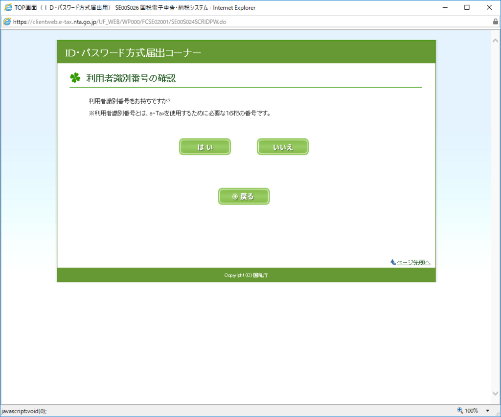
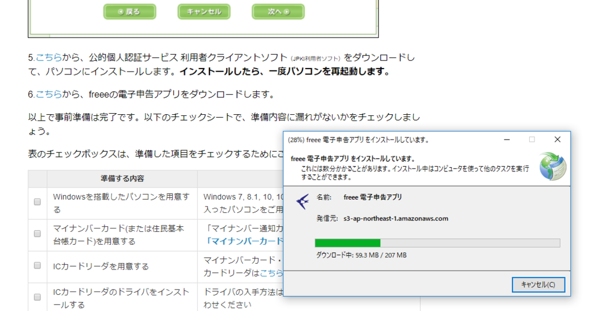
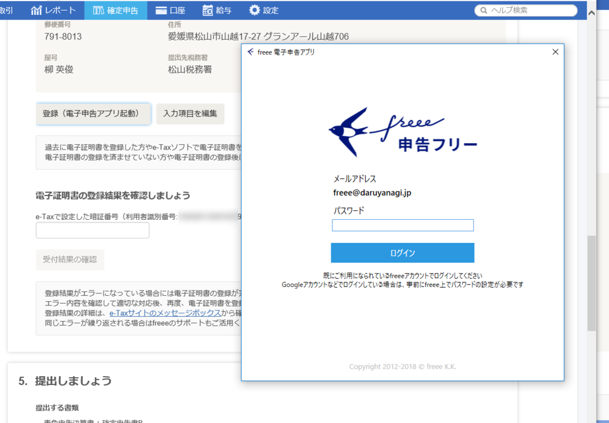
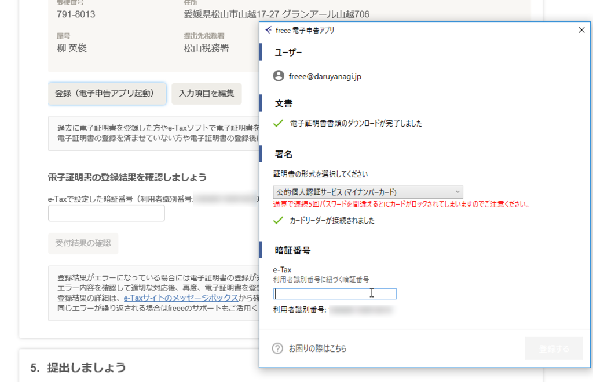

2月17日：確定申告終わりました（freee で電子申告！
執筆日時：
本気を出せばものの数時間で終わらせられるのに、億劫で、億劫で、しまいにはストレスで昼夜逆転の生活になってしまうぐらい嫌いな確定申告。やっつけたあとの解放感、たまんねーな！
ちなみに、今年は増収増益でした。アフィリエイトセグメントでは成長の鈍化がみられたものの、主力である無職セグメントでの収入が伸びたのと、お父ちゃんが海外のお仕事でお金を稼いでくれた＆帰国してからは食費を中心にお金を出してくれたため、キャッシュフローに余裕ができました。保険料の安い文美国保には入れたのも大きいですね（これに伴い、無職セグメントは今年度より、文筆業セグメントに改組される予定です）。今後はいかに無駄遣いを抑え、資産を形成し、出産・育児に意欲のあるかわいい嫁さんをゲットできるかが課題となりそうです。あと、できれば追い炊きのある＆駐車場のある物件に引っ越ししたい。
クラウド会計サービス freee をつかった確定申告
クラウド会計サービス freee で確定申告を行うのは今回で4回目かな？ もう手慣れたもんで、クレカ払いの経費はほぼ全部自動で記帳、現金払いの領収書を入力するのが面倒くさいだけです。最近はモバイルアプリも賢くなっていて、領収書をカメラでパシャッとするだけで入力できるらしいが……それも今度試してみよう。日頃からコツコツとやれば、2月になってストレスをため込んでしまうこともないはず。
データ入力自体は1時間ほどで完了。これを印刷して税務署にもっていってもいいのだけど、今回は余裕もあることだし、電子申告に挑戦してみました。というのも、そろそろ電子申告控除が始まりそうなので。
政府・与党は１３日、平成３０年度税制改正で、３２年１月から自営業者や個人事業主が税務申告を電子申告した場合、控除額を１０万円増やすことを決めた。……自営業者らは国の電子申告・納税サイトである「ｅ－Ｔａｘ」を使い税務申告を行えば控除額が１０万円上乗せされる仕組みにする。
今回の所得税改革では、給与所得控除を一律１０万円引き下げるのに合わせ、青色申告特別控除が６５万円から１０万円減らされるが、電子申告すれば結果として控除額は変わらない。誰でも受けられる「基礎控除」は１０万円引き上げられるため、所得税全体の差し引きでは税負担が減る。
開始されてからあたふたするのは嫌だし、予習をしておこうかなと。幸い、マイナンバーカードもカードリーダーもあるし、道具はそろってる。

ソニー SONY 非接触ICカードリーダー/ライター PaSoRi RC-S380
- 出版社/メーカー: ソニー(SONY)
- 発売日: 2012/10/10
- メディア: Personal Computers
- 購入: 5人 クリック: 9回
- この商品を含むブログ (18件) を見る
調べてみると、freee は電子申告に対応しているようで、e-Tax のサイトを使うよりは断然簡単そうでした。

とはいえ、あまり親切な案内ではなく、ところどころ躓いてしまいましたけど。
利用者識別番号の取得＆事前準備セットアップのセットアップ

電子申告を行うには、「利用者識別番号」というものを取得する必要があるみたいです。なんか難しく言ってるけど、要するに e-Tax の「ユーザー ID」だよな……今年から「マイナンバーカード方式」ってのが導入されたらしく、マイナンバーカードとカードリーダーがあれば割と簡単に取得できるようになったみたいです。
とりあえず久しぶりに Internet Explorer を起動して、利用者識別番号を取得しました。そうそう、「事前準備セットアップ」ツールもインストールしておかなきゃですよ。「公的個人認証サービス 利用者クライアントソフト（JPKI 利用者ソフト）」も一緒にインストールできた気がする（終わったら一度再起動しておこう）。
思うんだけど、こういう準備って結構めんどくさいから、
- デスクトップに Internet Explorer のショートカット
- 「事前準備セットアップ」ツールなど、必要ソフトをプリインストール済み
- カードリーダー内蔵
の確定申告専用 PC とか売れば割とウケるんじゃないかと思う。なんなら、レシートを取り込むスキャナーも内蔵しちゃって。ダメですかね。
freee の電子申告アプリ
さて、ここまでは割と常識というか、「電子申告やったことないけど、ニュースには接してた」レベルの自分でもサクッとできた。ちょっと迷ったのが、freee の電子申告アプリ。確定申告の書類作成ページにはダウンロードへの導線が見当たらなくて、ググってリンクを探す羽目になった。
Windows 版は ClickOnce インストーラーでセットアップ。

念のため、この段階で OS を再起動したら、freee の確定申告の書類作成ページにある［登録する（電子申告アプリ起動）］ボタンからアプリを起動できるようになった。

このアプリでは、
- 電子署名の登録
- 確定申告の電子申請
が行えるみたい。シンプルなので、使い方で悩むことはないと思う。

むしろ普通の人にとっての難関は e-Tax の利用者識別番号、パスワード、マイナンバーのパスワード（アルファベットと数字：公的個人認証サービス、数字4桁：利用者証明用電子証明書のパスワード、券面事項入力補助用のパスワード）がごっちゃになりそうってところじゃないかな。
ファッキンシット！なところ
減価償却資産の名称等（繰延資産を含む）は16文字以下で入力してください
— だるやなぎ に天使が舞い降りた！ (@daruyanagi) February 16, 2019
こういうの殺したくなる（
紙に印刷して申告するときは問題にならないが、電子申告だと文字数制限があるみたい。この制限に引っかかった資産（律儀に製品名をフルで記入していたのが敗因だった）は今年で償却終わりだし、今年は電子申告あきらめようかな、とも思ったけど、頑張って2016年までさかのぼって帳簿を書き直して解決した。
感想
途中、少し躓いたけど、最後の［申告する］ボタンを押してアプリをごにょごにょっとするだけで申告作業自体は完了。「ぇ、もうこれで終わり？」みたいな感じだった。ここ数回は紙に印刷して、散歩がてら税務署（松山市の場合は、松山城のお堀の北端、アパホテルのあたり）まで歩いて持って行っていたのだけど、なんか拍子抜けでちょっと寂しいぐらいだ。